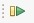

Energy Metrology CCS User’s Guide¶
This Guide helps the user to import the energy library projects into CCS and test the functionality.
CCS Project setup¶
Go to Import CCS Projects as shown below.
Click Browse. Navigate to energy measurement project folder.
Click Select Folder. Check the desired hardware board (TIDA-010243), and click Finish to import the project into your workspace.
Adding Initial Parameters (optional)¶
In the Project Explorer, open the modules/ADS/ADS_defaults.h file, modify the defaults for ADS registers (optional).
Open template.h file, modify the metrology parameters (optional).
Starting the Project¶
Connect the hardware and turn on the power supply.
Click on the Build button.
 Project should build with no errors.
Project should build with no errors.Click on the Debug button.
Open the Expressions window and add the following global structures and expressions.
Structure |
Description |
|---|---|
gMetrologyWorkingData |
Holds all the metrology parameters |
gAdsHandle |
Holds all the ADS131M0x parameters |
gDLT645 |
Holds the UART communication data |
Expand the structures and add IQ values to respective parameters. Refer to metrology library to find the IQ values of each parameters.
Press Play  to start the code.
Enable “Continuous Refresh” in the Expressions window.

Running the Project¶
Turn ON the voltage source and set the voltage to nominal voltage (230V), the ADS will capture this voltage and computed value is displayed in CCS expression window. This should match with the applied voltage.
Start applying the load, current starts flowing to load. The ADS will capture this current and computed value is displayed in CCS expression window. This should match with the actual current flowing to load.
Along with voltage and current, metrology library continuously computes power, energy, power factor and other parameters. All the parameters are displayed in CCS expression window.
Vary the voltage and current to test with various ranges of input.